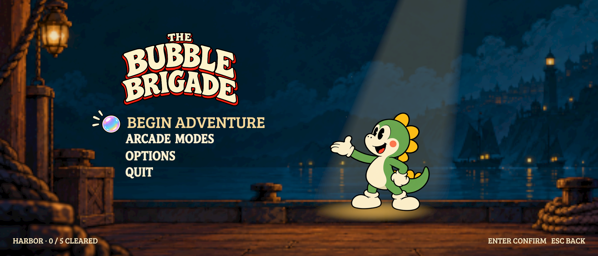

Playtest corrections
Actual Game Engine captures. Existing map paintings and geography are preserved. New art matches the shipped game rather than the superseded guide. Implementation and verification.
Only the curtain moves
Closed cloth → upward reveal → prepared menu. The hem has real alpha; no logo, dragon or prompt is on the curtain.
Closed

Menu revealedApproved illustrated state marks
Drawn from the existing title lettering, item artwork and dragon palette. These marks stay fixed above the original entrances.